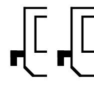
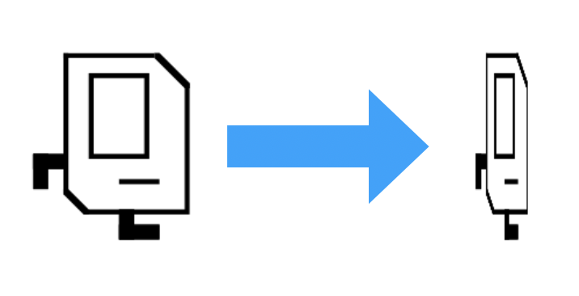
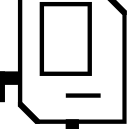

Section #3: Parameters, Return Values & Images
April 26th, 2020
Written by Brahm Capoor, Juliette Woodrow, Parth Sarin, Kara Eng, Tori
Qiu and Peter Maldonado
This week in section, your goal is to practice and gain familiarity with
the principles of parameters and return values, as well as to work on
some interesting image problems using the
SimpleImage library. We'll also explore some interesting
applications of doctests in the debugging process.
Parameters Review
Checking Ranges
Implement the following function which takes in 3 integers as
parameters:
def in_range(n, low, high)
"""
Returns True if n is between low and high, inclusive.
high is guaranteed to be greater than low.
"""
Next, complete the program by writing a main function which
reads in three integers from the user and calls
in_range
to determine whether or not the second number is in between the first
and third. Here are a few sample runs of the program (user input is
italicized):
Enter first number: 42
Enter second number: 8
Enter third number: 50
8 is not in between 42 and 50
Enter first number: 8
Enter second number: 42
Enter third number: 50
42 is in between 8 and 50
Enter first number: 50
Enter second number: 42
Enter third number: 8
42 is in between 50 and 8
FizzBuzz
In the game Fizz Buzz, players take turns counting up from one. If a
player’s turn lands on a number that’s divisible by 3, she should say
“fizz” instead of the number, and if it lands on a number that’s
divisible by 5, she should say “buzz” instead of the number. If the
number is both a multiple of 3 and of 5, she should say "fizzbuzz"
instead of the number. A spectator sport, it is not.
What it is, however, is an interesting problem in control flow and
parameter usage. Write a function called fizzbuzz which
accepts as a parameter an integer called n. The function
should count up until and including n, fizzing and buzzing
the correct numbers along the way. Once it's done, the function should
return how many numbers were fizzed or buzzed along the way.
Next, complete your program by writing a main function that
reads in an integer from the user and plays fizzbuzz until it counts to
the number. Here's a sample run of the program (user input is
italicized):
Number to count to: 17
1
2
Fizz
4
Buzz
Fizz
7
8
Fizz
Buzz
11
Fizz
13
14
Fizzbuzz
16
17
Medical Test Simulator
A team of doctors and scientists has developed a new medical test for a
rare disease that they say is 99% accurate. However, they warn, that
number is deceiving. Your job is to write a program that confirms this.
To be precise about our wording, a test being 99% accurate means that
for every 100 people it tests, 99 people will be correctly diagnosed as
sick or healthy.
To explore the implications of this, suppose we have a population of
10000 people, of whom 1%, or 100 people, have the disease. Your job is
to write a function called simulate_tests, which predicts
each of 4 quantities:
-
The number of true positives: the number of sick people who are
correctly diagnosed as sick.
-
The number of false positives: the number of healthy people who
are incorrectly diagnosed as sick.
-
The number of false negatives: the number of sick people who
are incorrectly diagnosed as healthy.
-
The number of true negatives: the number of healthy people who
are correctly diagnosed as healthy.
In order to be able to generalize this prediction to other diseases and
contexts, your function should accept the following parameters:
def simulate_tests(num_people, test_accuracy, infection_rate)
"""
num_people: the number of people getting the test
test_accuracy: how accurate the test is
infection_rate: the proportion of the population with the disease
"""
In the specific example discussed above, the function would be called
with these parameters:
simulate_tests(10000, 0.99, 0.01)
Your function should print all 4 quantities mentioned above and return
the fraction of incorrect positive results: that is, the number of
incorrect positive results divided by the total number of positive
results.
This is a tricky process, so we'll break it down into steps. To simulate
a single person's test, take these steps:
-
Randomly choose whether the person is sick with a probability of 0.01.
-
Randomly choose whether the test is correct for them with a
probability of 0.99.
-
Update your counts accordingly.
You might wish to make use of the following piece of code, which
evaluates to True with probability prob
is_true = random.random() < prob
random.random() returns a random number between 0 and 1,
whose probability of being less than prob is
prob, provided that prob is between 0 and 1.
For example, a random number between 0 and 1 has a 50% chance of being
less than 0.5, and so to get a variable that is True with
50% probability, you'd use the following line:
is_true = random.random() < 0.5
Once you've written this function, complete the program by writing a
main function that reads in a number of people, a test
accuracy rate and an infection rate from the user, calls
simulate_test
and then prints the proportion of incorrect positive results (which
simulate_test should return). You may assume the user types
in valid inputs for each of these values, although you should decide
what type they should be.
Here's some sample output of the program (user input is
italicized):
Number of people: 10000
Test accuracy: 0.99
Infection rate: 0.01
True positives: 93
False positives: 113
False negatives: 1
True negatives: 9793
54.85436893203883% of positive tests were incorrect
As you can see, the results are pretty surprising: nearly 55% of people
told they had the disease didn't actually have it. Intuitively, why
might this be? Is our result just anomalous?
Images
Implement the following functions to familiarize yourself with the
various ways you can work with images. Each function takes in a string
filename, which can then be converted into a
SimpleImage. Each function should end by displaying the
image, which can be done by calling the .show() function on
an image.
Double Left
def double_left(filename):
"""
Takes the left half of image, and copies it on top of the right half.
"""

Squeeze Width
def squeeze_width(filename, n):
"""
A funhouse mirror effect governed by the int parameter n.
Create a new image with the same height as the original, but
with a width that is n times smaller than the original's.
Copy the original image such that it is squeezed horizontally.
For example, if n = 4, the pixels in the output image with an
x coordinate of 0 would be copies of the input pixels with
an x coordinate of 0 * 4 = 0, while pixels in the output
image with an x coordinate of 1 would be copies of the input
pixels with an x coordinate of 1 * 4 = 4, and so on.
"""

Crop Image
def crop_image(filename, n):
"""
crops the image to fit inside of a frame by shaving
n pixels from each side of the image.
You may assume that n is less than half the width of
the image.
"""

Debugging with Doctests
In this problem, we'll work through using doctests to help us debug a
program. Suppose we're trying to write a function which given two
integers, calculates the Greatest Common Divisor of both numbers. The
Greatest Common Divisor of two numbers is the largest number that is a
factor in both of them. In greatest_common_divisor.py,
we've provided the following buggy implementation of a function called
greatest_common_divisor:
def greatest_common_divisor(a, b):
"""
Return the greatest common divisor of a and b.
>>> greatest_common_divisor(4, 16)
4
>>> greatest_common_divisor(16, 4)
4
>>> greatest_common_divisor(9, 24)
3
"""
lower = a
gcd = 1
for i in range(1, lower):
if a % i == 0 or b % i == 0:
gcd = i
At first glance, this looks like a reasonable way of solving the
problem, but it turns out there are several issues. By running the
doctests for the function, try identifying what the bugs are and
correcting them. You might wish to add more doctests to more
exhaustively test your function.